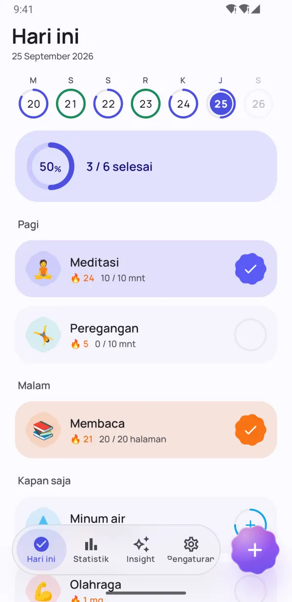
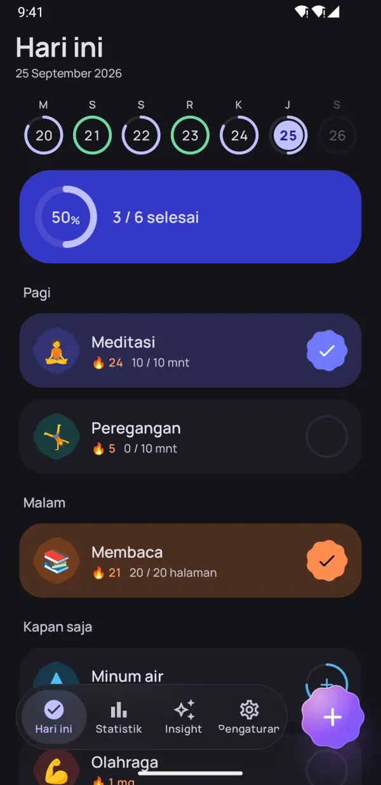
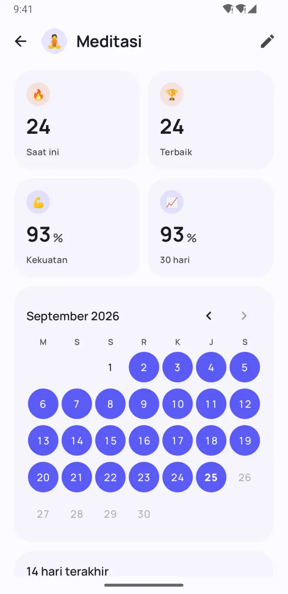
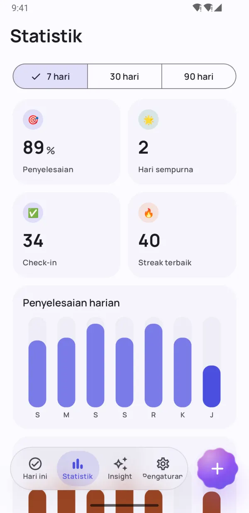
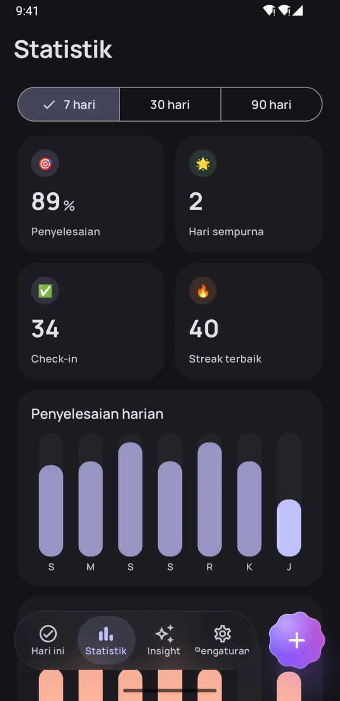
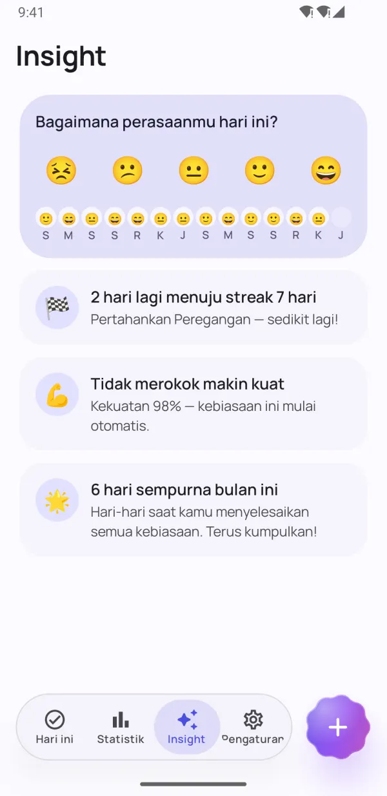
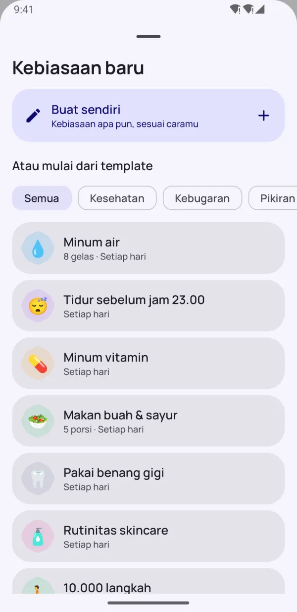
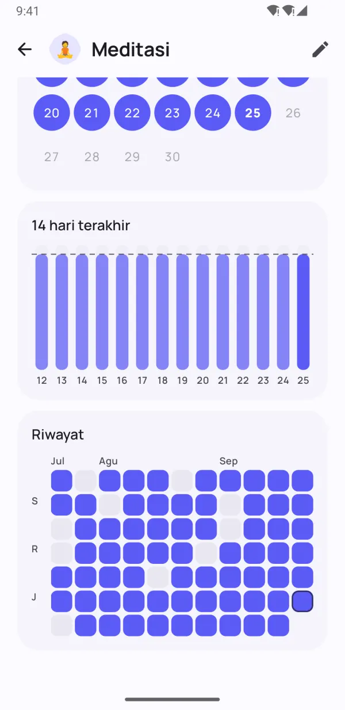

Kebiasaan kecil.
Perubahan besar.
Dotday membantumu membangun kebiasaan baik dan menghentikan kebiasaan buruk — tanpa tekanan. Check-in dengan sekali ketuk, jaga streak tetap hidup di hari yang sibuk, dan lihat apa yang benar-benar berhasil untukmu.
- Gratis digunakan
- Tanpa daftar
- Data tetap di HP-mu
- 13 bahasa


Dibuat agar kebiasaan melekat
Semua yang kamu butuhkan untuk tetap konsisten — tanpa ada yang menghalangi.
Seluruh harimu, sekali ketuk
Grup pagi, siang, dan malam mengubah rutinitasmu jadi checklist sederhana. Ketuk sekali, selesai.
- Ya/tidak, jumlah, timer, dan kebiasaan yang ingin dihentikan
- Strip mingguan menampilkan setiap hari sekilas
- "Selesai" dan "10 mnt lagi" langsung dari pengingat

Streak yang memaafkan hari buruk
Hari istirahat, jadwal fleksibel, dan pembeku streak membuatmu terus melaju. Kekuatan kebiasaan menunjukkan seberapa kuat sebuah kebiasaan — bukan hanya seberapa panjang streak-mu.
- Lewati satu hari tanpa memutus streak
- Pembeku streak untuk hari sibuk atau sakit
- Skor kekuatan kebiasaan dari 0 hingga 100%


Lihat progres nyatamu
Heatmap, kalender, dan tren penyelesaian menunjukkan dengan jelas perkembanganmu dalam 7, 30, dan 90 hari.
- Heatmap untuk setiap kebiasaan
- Streak terbaik dan tingkat penyelesaian
- Indah di mode terang maupun gelap

Insight yang bikin kamu terus maju
Catat mood-mu dalam sedetik dan Dotday menemukan apa yang benar-benar berhasil: hari terbaik dan tersulitmu, serta kebiasaan yang membuat mood-mu naik.
- Check-in mood sekali ketuk
- Dorongan sebelum pencapaian berikutnya
- Temukan kebiasaan yang membuatmu lebih bahagia
Detail kecil, perbedaan besar
Fitur yang dipikirkan matang agar pelacakan terasa mudah.
Widget layar utama
Centang kebiasaan hari ini, pantau streak atau heatmap — tanpa membuka aplikasi.
Pengingat yang bekerja
Tandai kebiasaan selesai atau tunda langsung dari notifikasi.
Timer bawaan
Kebiasaan berbasis waktu dapat timer dengan notifikasi langsung.
Health Connect
Langkah, tidur, dan olahraga bisa menyelesaikan kebiasaan secara otomatis.
40 template
Minum air, membaca, olahraga, meditasi, tidak merokok — mulai dalam hitungan detik.
Rencanakan harimu
Kelompokkan kebiasaan ke pagi, siang, dan malam.
Catatan dan mood
Tambahkan catatan di hari mana pun dan lihat pengaruh kebiasaan pada mood-mu.
Mode gelap & AMOLED
Warna Material You dan tema hitam pekat untuk layar OLED.
Cadangan & ekspor
Ekspor semuanya ke JSON atau CSV dengan Pro, lalu pulihkan di HP baru.
Intip isinya
Bangun kebiasaan yang bertahan Lihat progres nyatamu Statistik dalam sekejap Insight yang bikin semangat 
Mulai cepat dengan 40 template Cantik dalam mode gelap 
Setiap hari tercatat rapi Privat. Tanpa akun. Tanpa iklan.
Mulai dalam kurang dari semenit
Tanpa akun, tanpa pengaturan, tanpa perlu belajar. Baca panduan lengkap →
Pilih kebiasaanmu
Pilih dari 40 template atau buat sendiri — kebiasaan apa pun, sesuai caramu.
Check-in setiap hari
Sekali ketuk di layar Hari ini, widget, atau notifikasi.
Lihat kebiasaanmu melekat
Streak, kekuatan kebiasaan, dan insight menunjukkan progresmu bertumbuh.
Privasi sejak awal
Tanpa akun. Tanpa daftar. Tanpa iklan. Kebiasaan, catatan, dan mood-mu hanya disimpan di HP-mu — kami tidak pernah melihatnya. Kebijakan Privasi
- Tanpa akun
- Tanpa iklan
- Offline
- Datamu, HP-mu
Buka semuanya dengan Pro
Aplikasi intinya gratis selamanya. Upgrade ke Pro untuk kebiasaan tanpa batas dan semua fitur — coba gratis 7 hari.
- Kebiasaan tanpa batas
- Riwayat lengkap dan statistik 90 hari
- Semua insight dan korelasi mood
- Pelacakan otomatis dengan Health Connect
- Semua widget
- 5 pembeku streak setiap bulan
- Hingga 5 pengingat per kebiasaan
- Ekspor ke JSON dan CSV
Bulanan, tahunan, atau pembelian seumur hidup sekali bayar. Batalkan kapan saja di Google Play.
Pertanyaan yang sering diajukan
Apakah Dotday gratis?
Ya. Aplikasi intinya gratis selamanya: hingga 5 kebiasaan, pengingat, streak, widget Hari ini, dan statistik 30 hari. Dotday Pro membuka kebiasaan tanpa batas dan semua fitur, dengan uji coba gratis 7 hari.
Apakah saya perlu membuat akun?
Tidak. Dotday bekerja tanpa akun, pendaftaran, atau koneksi internet. Cukup instal dan mulai.
Di mana data saya disimpan?
Hanya di HP-mu. Kebiasaan, catatan, dan mood-mu tidak pernah keluar dari perangkatmu. Dengan Pro, kamu bisa mengekspor cadangan JSON atau CSV kapan saja.
Bagaimana jika saya melewatkan satu hari?
Progresmu tidak hilang. Kamu bisa melewati hari itu sebagai hari istirahat, memakai pembeku streak, atau memasang target mingguan alih-alih harian. Kekuatan kebiasaan turun perlahan, tidak kembali ke nol.
Kebiasaan apa saja yang bisa dilacak?
Empat jenis: ya/tidak ("meditasi"), jumlah ("8 gelas air"), timer ("30 menit membaca") dan kebiasaan yang ingin dihentikan ("tidak merokok").
Bagaimana cara memindahkan kebiasaan ke HP baru?
Dengan Dotday Pro, buka Pengaturan → Datamu → Ekspor cadangan dan simpan file JSON-nya. Di HP baru, instal Dotday dan pilih Pulihkan dari cadangan — memulihkan itu gratis.
Apakah ada versi iPhone?
Belum — saat ini Dotday tersedia untuk Android di Google Play.
Bagaimana cara membatalkan Pro?
Buka Google Play → Profil → Pembayaran & langganan → Langganan, pilih Dotday, lalu ketuk Batalkan. Pembelian seumur hidup tidak perlu dibatalkan.
Kebiasaan yang didukung sains
Panduan praktis berdasarkan penelitian yang ditinjau sejawat. Setiap angka tertaut ke sumbernya.
Cara membangun kebiasaan: metode 7 langkah yang didukung riset
Membangun kebiasaan berarti mengulang satu tindakan kecil setelah pemicu harian yang sama sampai tindakan itu berjalan otomatis. Berikut cara membentuk kebiasaan baru langkah demi langkah, dan berapa lama waktu yang realistis.
7 menit bacaBaca artikel →Aturan 21 hari: benarkah kebiasaan terbentuk dalam 21 hari?
Aturan 21 hari adalah mitos yang berawal dari sebuah buku pengembangan diri tahun 1960. Penelitian menunjukkan sebagian besar kebiasaan butuh sekitar dua sampai lima bulan, dan satu hari yang terlewat hampir tidak berpengaruh.
6 menit bacaBaca artikel →Cara menggunakan habit tracker (dan mengapa efektif)
Habit tracker efektif karena membuat pemantauan diri jadi otomatis, dan memantau progres terbukti konsisten membantu orang mencapai tujuannya. Berikut apa kata riset, cara menyiapkannya dengan baik, dan kesalahan yang membuat orang menyerah.
7 menit bacaBaca artikel →Mulai dengan satu kebiasaan kecil hari ini
Dirimu di masa depan akan berterima kasih. 🌱
TEMUKAN DIGoogle Play